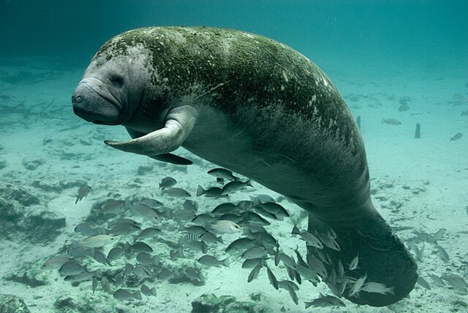

Bodies and Behaviors

Body Stats
Florida manatees are large, gray, aquatic mammals, though algae often grows on the backs and tails of manatees, which makes their skin color appear green or brown.
Though they can grow larger and heavier, adult manatees are typically:
- 9-10 feet long from snout to tail
- weigh around 1,000 pounds
They have some distinct physical traits:
- Their small eyes have a membrane that can cover the eyes for protection.
- The ear openings are small and they have no external lobes.
- They have a flexible lip pad that is used to move food into their mouth.
Manatees are long-lived and reproduce slowly. Age estimates based on growth rings in ear bones indicate life spans of up to 59 years, and at least one manatee has survived more than 69 years in captivity.
Swimming and Breathing
Like other mammals, manatees breathe air. Nostrils are located above the snout and have valves that tightly close when the manatee is under water.